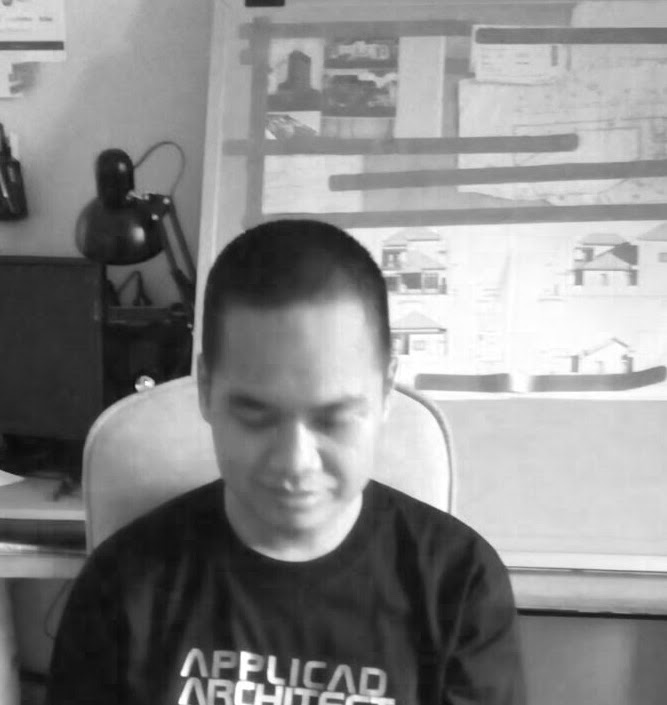

Jaenal Arifin

Summary
I'm a web developer with architectural design background.
Education
- A.Md, Teknik Arsitektur - Politeknik Negeri Pontianak (2003-2007)
- S.T., Arsitektur - Universitas Diponegoro (2008-2010)
Work Experience
Quality Control
2009-2009 di PropertiMedia21
Drafter
2010-2010 di Wastuwidyawan Konsultan
Architect
2011-Now
BIM Manager
2015-Now
Skills
- Autocad
- Archicad
- Revit
- Tekla Structural Designer
Awards and Certifications
- BIM Archicad User
- Revit Training
Other